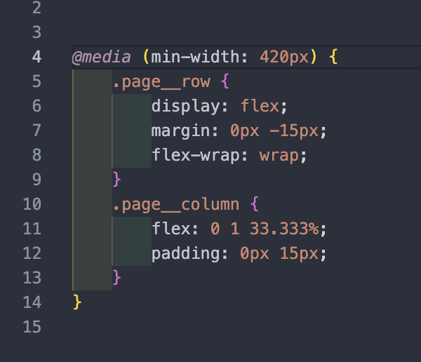
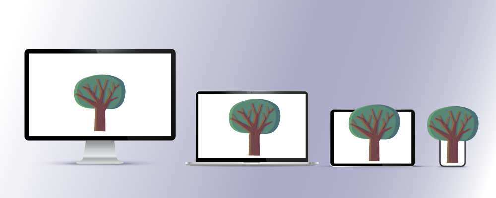

Mobile First Design при створенні сайтів:
що він означає і чому є настільки актуальним
Напевно, багато хто пам'ятає свій перший кнопковий
мобільний телефон: після кожного входу в браузер
доводилось із хвилюванням перевіряти залишок коштів
на рахунку. Спочатку мобільний інтернет був дорогим,
незручним у використанні та вкрай обмеженим у
можливостях. Сьогодні більше ніж 50% усього
інтернет-трафіку припадає на сеанси зі смартфонів.
Крім того, за допомогою мобільних пристроїв
здійснюється все більше купівель – за прогнозами, на
кінець 2021 року частка мобільної комерції
становитиме близько 73% від усіх роздрібних продажів
у e-commerce.
Такі тенденції вимагають приділяти все більше уваги
мобільній версії сайту – вона має справляти
максимально позитивне враження на користувача.
Оптимізація сайту для різних типів пристроїв уже
давно стала одним із обов'язкових пунктів у
технічному завданні на розробку. А сьогодні все
частіше можна почути про підхід Mobile First. У цій
статті ми розповімо, чим він відрізняється від
звичного процесу створення сайтів, а також про
основні принципи, переваги та підводні камені
методу.
Що таке Mobile First?
Стратегія Mobile First, як випливає з назви,
передбачає проектування інтерфейсу сайту,
орієнтованого в першу чергу на мобільні пристрої.
Філософія підходу полягає в тому, що спочатку
створюється прототип дизайну для найменшого екрану,
а потім розробники переходять до дисплеїв більших
розмірів. У цьому – основна відмінність від
класичного підходу Desktop First, який уже багато
років використовують веб-спеціалісти.
Традиційно процес створення сайтів починається з
розробки макета для комп'ютерів та ноутбуків, тому
що вони мають високу продуктивність, а на великому
екрані можна розмістити багато контенту. Потім уже
готова версія адаптується до інших пристроїв із
урахуванням їхніх можливостей. Тож навіщо
знадобилося розробляти концепцію, де все
відбувається у зворотному порядку?
Річ у тім, що не всі візуальні та функціональні
елементи десктопних сайтів вдається перенести до
мобільної версії, зберігаючи при цьому таку саму
легкість взаємодії. Доволі часто оптимізація сайту
для смартфонів супроводжується різними проблемами:
довгим завантаженням сторінок, складною навігацією,
незручними кнопками CTA та ін. Не кажучи вже про UI,
до якого дизайнер доклав стільки зусиль! Для
невеликого екрану смартфона доводиться прибирати
значну частину привабливих, але не функціональних
елементів.
Приклад коду


Не все, що привабливо виглядає і добре працює на
десктопі, можна реалізувати на смартфоні
У чому різниця між адаптивним, чутливим дизайном та Mobile First?
Кожен із цих підходів може забезпечити власникам мобільних пристроїв комфортну роботу з вашим сайтом. Аби не заплутатися в термінах, розглянемо детальніше основні відмінності.
Адаптивний веб-дизайн (AWD)
Під час проектування веб-сайту в адаптивному дизайні розробляється кілька статичних макетів для різних типів пристроїв. Шаблони містять структуру розміщення елементів залежно від ширини дисплею. Зазвичай макети створюють для кількох стандартних величин ширини, наприклад: 320 px, 480 px, 768 px, 960 px, 1200 px, 1600px. Скрипти визначають розміри екрана користувача та завантажують відповідний шаблон на підставі цих контрольних точок.
В адаптивних макетах враховуються особливості різних пристроїв. Наприклад, для десктопних екранів – тільки горизонтальна орієнтація та велика область перегляду, а для планшетів та смартфонів – сенсорне керування та можливість повороту девайсу для перегляду.
Чутливий дизайн (Responsive Web Design, RWD)
У цьому випадку створюється один гнучкий макет, який надає сторінці можливість підлаштовуватися під будь-яку ширину екрану. Автоматична зміна розмірів контенту працює на всіх пристроях за рахунок рухомої сітки, гнучких зображень та медіазапитів.
Перевага Responsive Design полягає в тому, що не треба розробляти кілька версій сайту. Але при цьому слід ретельно перевіряти, чи коректно відображаються всі елементи на екранах різних розмірів.
Mobile First Design
При такому підході спочатку розробляється та завантажується версія для мобільних пристроїв із невеликим екраном. Потім вона масштабується, і залежно від платформи або браузера розробники можуть застосувати додаткові опції або інші стилі. Таким чином, з якого пристрою людина не переглядала б сайт – вона завжди отримує версію, яка відображається коректно.
 someMail@com
someMail@com